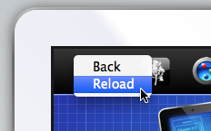

Responsive Resize
Clearing the Cache
To refresh a page you can do the following:
Right-click on the site in the viewport and select 'Reload'

To empty the cache:
Select 'Empty Cache' (
⌘E
) from the Cache menu, then click 'Empty'.